Oscilloscope Horizontal Controls
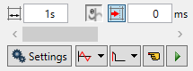
The oscilloscope horizontal controls appear towards the
bottom of the oscilloscope control panel. From here you can control such aspect
as the timebase, triggering modes and memory used for the captured data.
Timebase
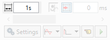
The required time base is selected using the up/down
scale buttons
on the right side of the current time base scale text box. The value selected
is the time per grid division on the display.
If the time base is greater than a predefined value, then
the data is retrieved from the controller in sections (as opposed to retrieving
a compete trace of data at one time.) These sections of data are plotted on the
display as they are received, and the last point plotted is seen as a white
spot.
After the oscilloscope has finished running and a trace has
been displayed, the time base scale may be changed to view the trace with
respect to different horizontal time scales. If the time base scale is reduced,
a section of the trace can be viewed in greater detail, with access provided to
the complete trace by moving the horizontal scrollbar.
Scope Delay
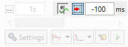
If the controller supports this feature the value is applied
to SCOPE_DELAY system parameter when the oscilloscope capture cycle is started.
When negative SCOPE_DELAY is set it is
possible to show/hide scope trigger position by pressing
button.
Horizontal scrollbar
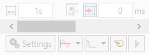
Once the oscilloscope has finished running and displayed the
trace of the recorded data, if the time base is changed to a faster value, only
part of the trace is displayed. The remainder can be viewed by moving the thumb
box on the horizontal scrollbar.
Additionally, if the oscilloscope is configured to record
both motion parameters and plot table data, then the number of points plotted
across the display can be determined by the motion parameter. If there are
additional table points not visible, these can be brought into view by
scrolling the table trace using the horizontal scrollbar. The motion parameter
trace does not move.
Display Mode
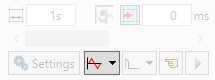
|
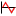
|
Y/t
(timebase) mode
- this is the normal operation mode for an oscilloscope
where each set of gathered data is plotted against time.
|
|

|
XY mode
- channels are grouped in pairs and the values form one channel are plotted
against the values of the other one in the pair.
|
|
|
XY
mode with uniform scale
–
this mode is similar to
previous one and two channels are grouped together. The difference is in the
way scaling works in 2D view. In previous mode the grid is stretched to the
view area and it is not possible to zoom and pan. In this mode the scale
factor is the same in X and Y directions and the user is given more freedom
to zoom and pan to area of interest.
|
|
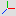
|
XYZ mode
– in this mode 3 channels are grouped together to provide X, Y and Z
coordinates of the control points of a 3D curve to be visualized
|
|
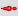
|
XYZD
mode
– in this mode 4 channels are grouped together to provide X, Y and Z
coordinates of the control points as well as control point thickness via 4
th
channel
|
|
|
XYZUVW
mode
– in this mode 6 channels are grouped together to provide X, Y and Z
coordinates of the control points as well as orientation as 3 rotations
around X, Y and Z axes.
|
One Shot / Repeat / Continuous Trigger Mode
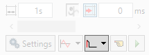
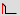
– One Shot Trigger
Mode.
In one-shot mode, the oscilloscope runs until it has been
triggered and one set of data recorded by the controller, retrieved and
displayed.
– Auto-repeat Trigger Mode.
In auto-repeat mode the oscilloscope continues running and
retrieving data from the controller each time it is re-triggered and new data
is recorded. The oscilloscope continues to run until the trigger button is
pressed for a second time. There is a setting for the maximum number of
captured data blocks to be kept and visualized as a trace history. When more
than maximum number of captured blocks are received the oldest ones are discarded
and replaced by the new data.
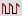
– Continuous
Trigger Mode
Continuous mode is an extension of auto-repeat mode where
there is no limit to the maximum number of visualized blocks to be kept and
visualized.
Continuous mode should be used with caution as is might lead to
slow responsiveness of the UI and even to out of memory condition when large
number of data set is collected.
Manual/Program Trigger Mode
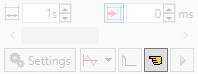
The manual/program trigger mode button toggles between these
two modes. When pressed, the oscilloscope is set to trigger in the program
mode, and two program listings can be seen on the button. When raised, the
oscilloscope is set to the manual trigger mode, and a pointing hand can be seen
on the button.
Button up
- Manual Trigger Mode:
In manual mode, the controller is triggered, and starts to
record data immediately the oscilloscope trigger button is pressed.
Button down
- Program Trigger Mode:
In program mode the oscilloscope starts running when the
trigger button is pressed, but the controller does not start to record data
until a TRIGGER instruction is executed by a program running on the controller.
After the trigger instruction is executed by the program, and the controller
has recorded the required data. The required data is retrieved by the
oscilloscope and displayed.
The oscilloscope stops running if in one-shot mode, or it
waits for the next trigger on the controller if in continuous mode
Trigger Button
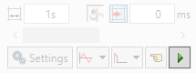
When the trigger button
 is pressed the
oscilloscope is enabled. If it is manual mode the controller immediately
commences recording data. If it is in program mode then it waits until it
encounters a trigger command in a running program.
is pressed the
oscilloscope is enabled. If it is manual mode the controller immediately
commences recording data. If it is in program mode then it waits until it
encounters a trigger command in a running program.
After the trigger button has been pressed, it changes to
 (stop) whilst
the oscilloscope is running. If the oscilloscope is in the one-shot mode, then
after the data has been recorded and plotted on the display, the trigger button
returns to indicating that the operation has been completed. The oscilloscope
can be halted at any time when it is running by pressing the
button.
(stop) whilst
the oscilloscope is running. If the oscilloscope is in the one-shot mode, then
after the data has been recorded and plotted on the display, the trigger button
returns to indicating that the operation has been completed. The oscilloscope
can be halted at any time when it is running by pressing the
button.
When real-time simulation is running in 3D visualization tool it
is not possible to trigger data capture at the same time as both tools use the
same functionality on MC. If simultaneous use of both tools is required the 3D
visualization tool can be switched to PRMBLK mode of operation from application
settings.
Control Oscilloscope Tool from a Program
Since Motion Perfect v5.0 it is possible to
emulate pressing of trigger button
from a program and to control the capturing in the tool. It is done
via messages generated by a program and sent via channel #9 to Motion Perfect.
To arm the oscilloscope tool and instruct
it initialize for capturing data, a program should execute following command:
CHANNEL_WRITE
(
9
,
"%[USER] SCOPE
ARM"
)
To disarm the oscilloscope and instruct it
stop capturing data, a program should execute:
CHANNEL_WRITE
(
9
,
"%[USER] SCOPE
DISARM"
)
Users of that functionality should be aware that there is a delay
between executing the command in the program and oscilloscope tool being ready
to capture data and the program should take that into account if it also
initiates the data collection at controller side using TRIGGER command.
Settings Button
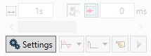
Clicking in the Settings button causes
Motion Perfect
to display the Settings Dialog.
Oscilloscope Cursors
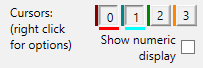
The cursor bars are enabled/disabled by clicking on one of
the cursor buttons which shows/hides the corresponding cursor. A cursor can be
moved by positioning the mouse cursor over the required bar, holding down the
left mouse button, and dragging the bar to the required position. Cursors are
automatically allocated to the first channel currently enabled. To allocate a
cursor to a different channel, right click on its button and choose the desired
channel from the pop-up menu. When a cursor is active a coloured bar representing
the channel to which the cursor has been allocated is displayed under the
cursor's button.
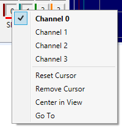
The cursor (right click) menu allows the user to assign the
cursor to a channel and also contains following functions:
-
Reset Cursor - resets the cursor position to a
position close to the start of the display,
-
Remove Cursor - allows to remove the cursor,
-
Centre in View - moves the cursor to the centre of
the view,
-
Go To - scrolls the display so that the cursor is
visible (only if zoomed in).
If the
Show numeric display box is checked then the
numeric display is enabled, this shows maximum and minimum values for all
enabled traces at the bottom of the oscilloscope display and the positions of
the active cursors at the top.
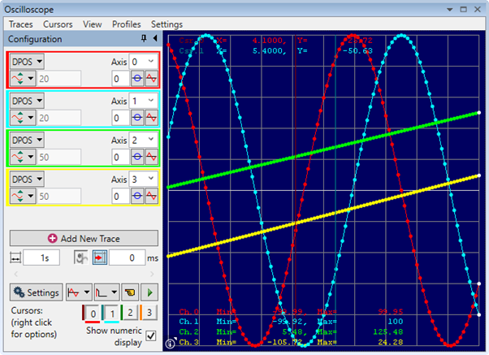